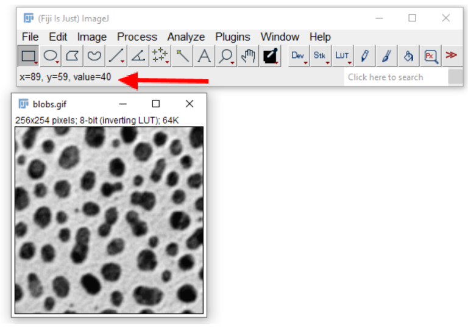
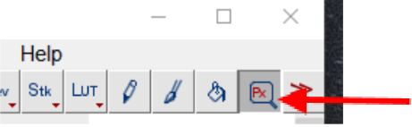
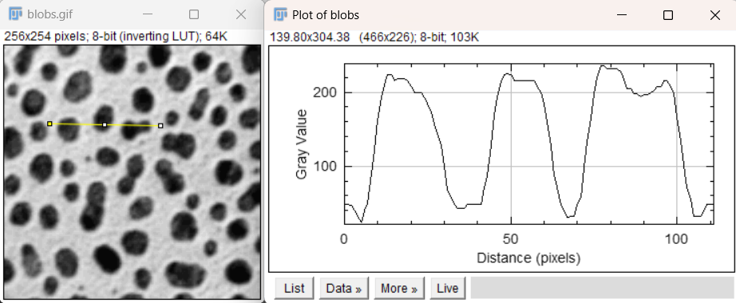
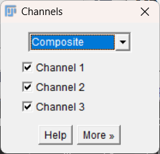
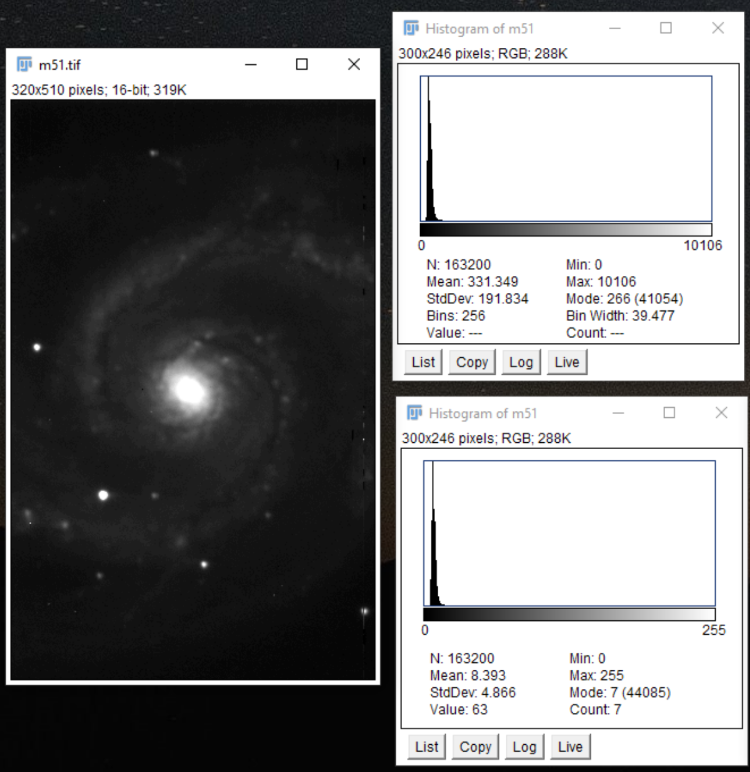

Getting Started, Opening an Image#
The easiest way to open a data set is to click-and-drag from the folder. However, some file types need to be specifically imported. To import a sequence of images that are saved within a folder, you can use the File > Import > Image Sequence option to open them as a stack or as separate images. Additionally, using a Virtual Stack in the Bio-Formats Importer may be useful if trying to view large data files. This makes it easier to get a quick look at data when there is limited RAM. However, if you need to perform an image operation, such as background subtraction, then more memory will be required as the data needs to be loaded.
Note
üí° Pro tip: Press Ctrl + L (Windows) or Command + L (Mac) to jump straight to the search bar.
This can access nearly any menu command or plugin, usually faster than using the menus!
Starting with a basic image#
Open “blobs.gif”, via File > Open Samples > Blobs, or Ctrl + Shift + B
Inspecting Images#
Hover over an area in the image.
In the status bar of Fiji, you should see the pixel you are on, with XY coordinates, and its associated value.In an RGB type image, Fiji will also tell you the associated color values for the red, green, and blue channels.

To see a larger area, use the Pixel Inspection Tool:
In the Fiji window, click the Pixel Inspection icon.
If the icon is not present, you can use the double red arrows to add the icon, by opening the list and selecting Pixel Inspector.

This brings up a window of pixel values that can be moved around the image.
To adjust the parameters of this window, click Prefs.
This can be used to adjust the size of the window.

Inverting the Background#
Sometimes the background may be white instead of black, depending on what you are interested in within the image.
The color scheme can be inverted by selecting LUT > Invert LUT.
Note: if you use Edit > Invert, this will invert the actual image and change the pixel values themselves, which may not represent the original data.
Changing the Color Scheme (LUT)#
A Lookup Table (LUT) controls the colormap of the images. This can easily be changed using the LUT button in the toolbar. Try a few LUTs and see how the information in the background and foreground changes.
Using Image > Colors > Display LUTs will display different types of LUTs.
It is also helpful to include a scale/calibration bar when changing LUTs.
This can be added with Analyze > Tools > Calibration Bar.

Colorblindness Consideration#
To test how different images may appear to those with colorblindness, you can use the Simulate Color Blindness plugin if you have an RGB image.
mpl-viridis can be a good option as it is designed to be perceptually uniform (see https://imagej.net/imaging/visualization).
As a separate note, it may also be helpful to test any publication figures (images or
otherwise) in grayscale, to see what color information may be lost if the paper is printed in
grayscale.
In many cases, it may be more practical to develop images/figures in grayscale,
especially for presentations, and it is still a valid representation of the data.
Plot/Line Plot#
To see graphically how the pixel values vary across the image we can use the plot tool.
This can be very useful for determining how much noise is in the background of an image, or for finding the width of an object, such as a point spread function.
Draw a line or rectangle across the image, using the tools from the toolbar:

Press Ctrl + K to display the profile along the line.
The Live button in the plot window can be used to create an active plot that changes when the selection in the image is changed.
Here we can clearly see the increase in signal intensity across the three selected blobs.
Since this is a rectangular selection, the values are averaged across the height of the rectangle.

In comparison, the plot of a single line shows similar intensity changes when carefully drawn through the three blobs, but the plot is noisier and more sensitive to where the line is placed.

Opening and viewing a Z-Stack#
Open “t1-head.tif”, via File > Open Samples > T1 Head (16-bits).
Use the bar to scroll through the stack of images
We can also display the orthogonal view by using Image > Stacks > Orthogonal Views or Ctrl/Command + Shift + H
The yellow crosshairs can be used to change the display for each orthogonal view, but one has to close the orthogonal view to select images.
To select from an orthogonal view, try reslice, in Image > Stacks > Reslice or press \ (backslash) when the image is in focus.
Hyperstacks#
Hyperstacks are multidimensional data, such as a multichannel timeseries or z-stacks.
Start by opening the “hela_infected_timeseries.tif” image. This is available for download at: https://media.imagej.net/workshops/data/3d/
If internet access is unavailable, the
Mitosis (5D stack)sample from File > Open Samples works, too.
Duplicate A Channel Or Image#
Use Image > Duplicate to bring up the duplication options window. This can also be done with Ctrl + Shift + D or Right Click > Duplicate. Here, we can specify which RGB channels and timepoints we want to separate. If we use 1-2 in the channels menu, it should produce an image of just the red and green channels. The duplicate hyperstack box should be checked. (If you are using the mitosis image, try choosing just one value for the color channel.)


Changing Channel Colors#
To change the display color of channels, use Image > Color > Channels Tool or Ctrl + Shift + Z.

Note: The “more” option can be used to apply colors to the selected channels.
3D Volume and Projections#
Open
t1-head.tif, File > Open Samples > T1 Head (16 bits)To display the 3D Volume, use Image > Stack > 3D Projection > Click ok In the 3D projection dialogue box, there are various options for projection including axis of rotation and setting the slice spacing (step size) which may be useful for known parameters.

Additionally, the original image stack may be projected along one axis using Image > Stacks > Z Project. It is important to note that the information in the projection is highly dependent on the display parameter. A few examples are shown below (left to right: single slice of the stack, average projection, median projection, max projection).

Changing Image Types, cautiously.#
Some operations - especially image math operations - only work on images of a certain type, and sometimes we desire images of a certain type. For example, if we want to multiply two 8-bit images, it would be prudent to first convert them to 16-bit images so the output is to a 16-bit image and does not overflow.
However, changing the image type through Image > Type can result in the loss of information as we will see in the next example. Not all image types can be converted back to the original. The following error is likely to display if you are not able to complete a type conversion.

Bit Depth#
Open the
m51.tifimage, Open > Open Samples > M51 Galaxy (16 Bits).Adjust the contrast so we can see the image a bit better. Image > Adjust > Brightness and Contrast.
Make a histogram of the image, Ctrl + H, and notice the scale of the histogram and the mean value. Keep this window open. a. 16-bit images have a maximum value of 65,536.
Convert the 16 bit image to an 8 bit image, Image > Type > 8 bit. a. 8-bit images have a maximum of 256 values. This means the data resolution and range is lower compared to a higher bit depth, so the data is compressed.
Make another histogram and keep the window open. How did the values change?

Adjusting Brightness and Contrast#
Changing the contrast in an image can be a good visualization tool. Using Ctrl + Shift + C or Image > Adjust > Brightness and Contrast will display the B&C menu. Using Auto or the B&C sliders changes the look up table (LUT), which does not change the pixel values. This is good for visualization, but using the Apply button will change the pixel values, which generally should not be done.
Set Scale and Scale Bars#
If the size per pixel is known, such as from a microscope calibration, this can be used to change the image dimensions from pixels to the known field of view.
Use Analyze > Set Scale to enter the known distance.
For example, an image with a pixel size of
0.73 pixels/micronwould be entered as shown, using “um” or “micron”.

Further info for setting the scale based on a measurement in an image can be found here:
https://serc.carleton.edu/eyesinthesky2/week2/get_to_know_imagej.html
To add a scale bar, use Analyze > Tools > Scale Bar.